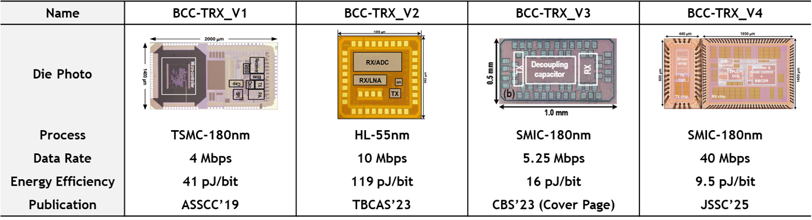

Topics: Sensing Tomorrow, Connecting Today
Application Specific Sensory Interface Circuits
ASIC for MEMS Inertial Sensors
Brief Introduction: How to guide smart UAVs in harsh environments (without GPS)? Micro-Inertial-Sensing Systems are the key. The major challenge is to eliminate low-frequency errors, including 1/f noise, and unpredictable drifts through advanced circuit design technologies.
 |
ASIC for Optical Brain-Computer Interfaces
Brief Introduction: Light time of flight is a promising representation of brain activities due to its noninvasive and high-spatial resolution nature. The main challenge in circuit design is to break through the trade-off between power consumption (supporting a large number of channels) and ToF resolution (providing precise measurement).
 |
Emerging Technologies on Analog Integrated Circuits
Flexible Thin-Film Integrated Circuits
Brief Introduction: Benefiting from large-area and low-cost fabrication, flexible integrated circuits based on thin-film transistors (TFTs) enable ubiquitous IoT applications. However, designing effective circuits using emerging devices is fraught with challenges, ranging from EDA tools to high-robustness circuit architecture.
Body-Channel Transceivers on CMOS
Brief Introduction: The human body is traditionally considered a barrier to RF transmission. However, recent studies suggest that it may function as a 'bridge’ for signals in quasi-static fields. Body-channel communication has demonstrated an order-of-magnitude higher efficiency compared to its BLE and UWB counterparts. The main challenge for circuit designers is how to leverage this efficiency in the unstable and unpredictable body channel.
|  |
Artificial Spiking Neural Networks on CMOS
Brief Introduction: Silicon processors have supported the entire information world; however, their energy efficiency has plateaued with the end of Moore's Law, making it difficult to improve. On the other hand, the human brain is the most energy-efficient processor in the world. The question of how to achieve high-efficiency signal processing similar to the human brain using silicon transistors, which are entirely different from neurons, is a fascinating and challenging topic.